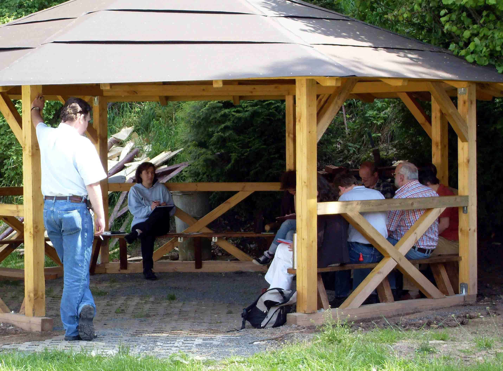
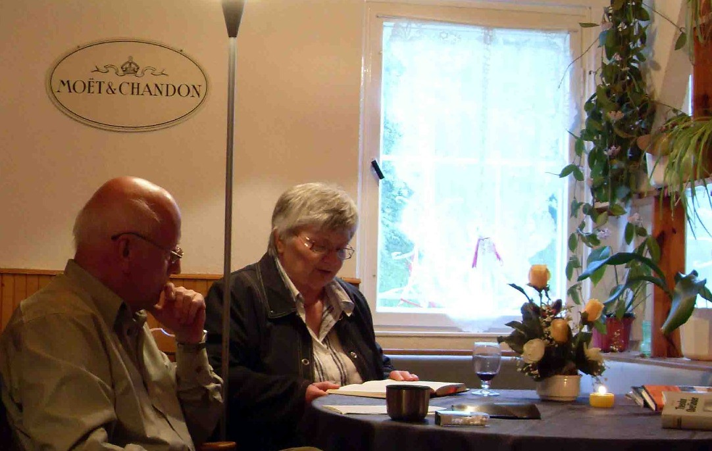
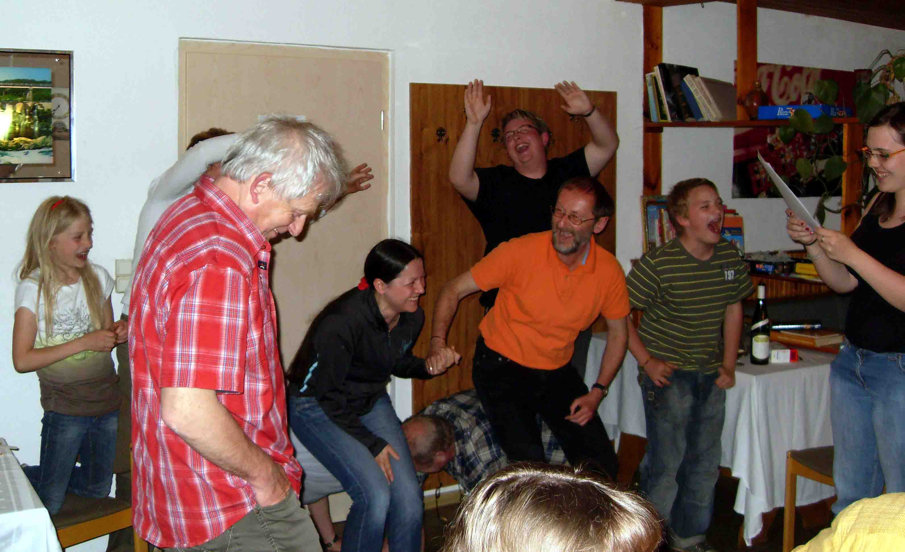
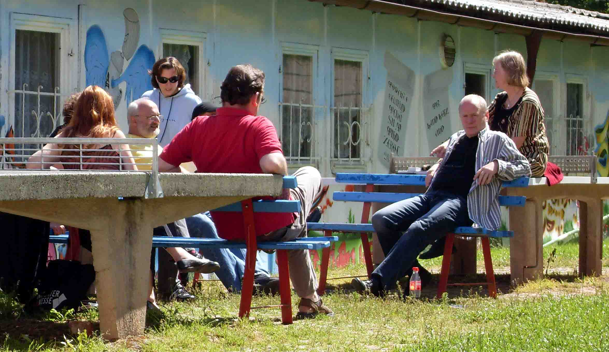
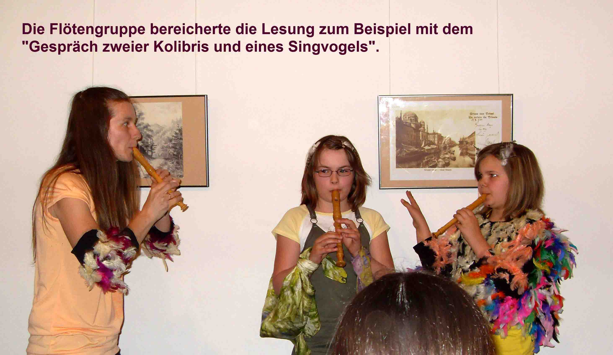

Vom 22. bis 24. Mai 2009 fand in Untermaßfeld die mittlerweile zwanzigste Schreibwerkstatt des Südthüringer Literaturvereins statt. In drei Seminargruppen, geleitet von Heidi Büttner (Prosa), Michael Carl und Sandro Eberwein (Lyrik) sowie Ulrike Blechschmidt (Jugendgruppe) wurden jüngst entstandene Texte diskutiert und verbessert und Schreibaufgaben gestellt. Zwei der so entstandenen neuen Geschichten kamen am Samstagabend im Baumbachhaus Meiningen schon zum Vortrag. Das Motto der Jubiläumswerkstatt war „Entscheidung – Zufall – Schicksal" – dem Thema näherte sich auch die Jugendgruppe in ihrem Auftritt. Der Dietzhauser Schriftsteller Siegfried Schütt las aus seiner dokumentarischen Erzählung „Liebe, Liebe lass mich los – Goethe und die Frauen". Zur Soiree im Baumbachhaus begleitete Gudrun Asmus gemeinsam mit ihrem Salamander-Trio die Autoren aus Thüringen, Rheinland-Pfalz, Hessen und Bayern.





